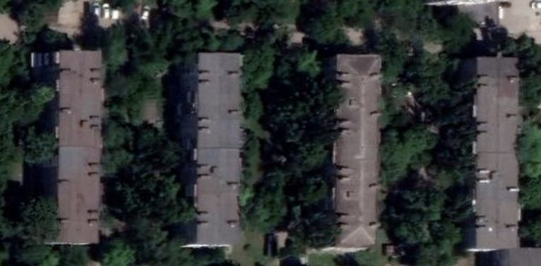
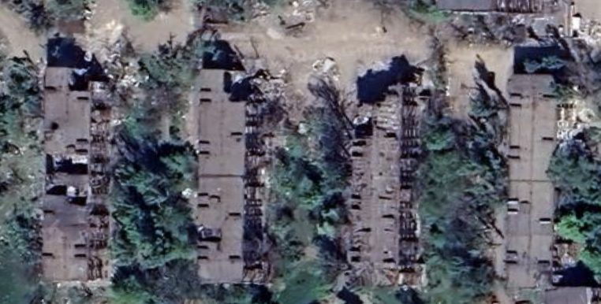
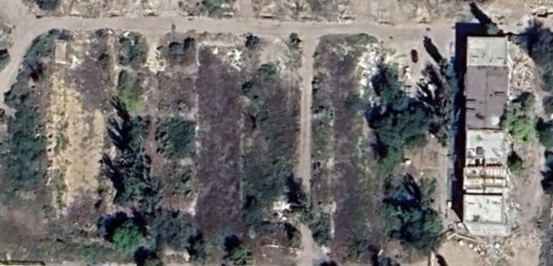
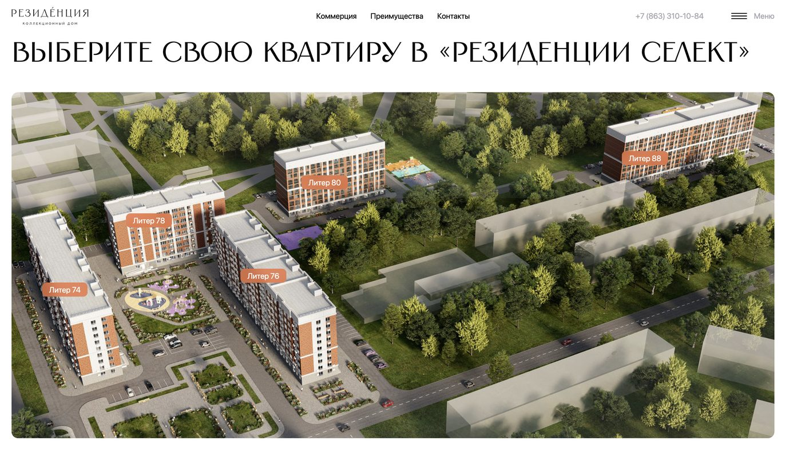

A single Mariupol avenue, demolished block by block under occupation decrees, is being rebuilt as branded condominiums — on the same ground where its residents buried their dead during the 2022 siege, and where no exhumation is recorded to have taken place first.
Stroiteley Avenue (Ukrainian: Budivelnykiv Avenue — “Builders’ Avenue”) runs through Mariupol’s Tsentralny (central) district. It was laid out in the 1970s as rows of standard nine-storey panel blocks built to house workers from the nearby Illich Iron & Steel Works.
After the siege, the avenue became one of the most active demolition-and-rebuild corridors in the occupied city. Demolition orders naming addresses on this avenue include DNR State-Committee Directive No. 56 (29 Sept 2022, naming nos. 78, 80, 88, 112) and Directive No. 172 (18 Apr 2023, naming nos. 72 and 117). On the cleared lots, a single state-linked developer is raising two branded complexes: “Rezidentsiya Select” (under construction) and “Rezidentsiya II” (already commissioned and occupied).
Sources: official decree texts (No. 172, No. 56); the Unified Housing-Construction Registry (ЕИСЖС / наш.дом.рф); Ukrainian Wikipedia, street history. All figures below trace to the project’s own pipeline unless otherwise attributed.Five consecutive residential buildings — nos. 74, 76, 78, 80 and 88 — were demolished under occupation orders and re-registered as five cadastral parcels granted to the same company, LLC “SZ-1 Porfir”, for one branded development, “Rezidentsiya Select.” The land-grant decrees are numbered 390, 391, 392, 393, 394 — five consecutive numbers issued as a single administrative package, all signed by Denis Pushilin, Head of the DNR. This is the documentary signature of a pre-planned block-level seizure, not five separate condition-based decisions.
The demolition orders that preceded the land grants carry two different signatures of authority. Nos. 78, 80 and 88 were ordered demolished under DNR State-Committee Directive No. 56 (29.09.2022) — issued by the wartime State Committee for Defence (ГКО ДНР), which Pushilin chaired and personally signed for other acts issued the same day; the Directive No. 56 document itself, however, could not be recovered from any of the three normative-act portals checked, and is treated here as cited, not captured. Nos. 74 and 76 were ordered demolished on 12.12.2022 by the Mariupol city administration, then headed by Konstantin Ivashchenko (in office 06.04.2022–22.01.2023) — the demolition register records the date and issuing authority for these two addresses, but not a decree number, so the office is attributed by tenure rather than a confirmed signature line.
Demolition orders (top) preceded the developer land-grants (bottom) by months, but both issued from the same occupation apparatus. New-build flat counts shown below each parcel; combined total 828.
The same stretch, watched from above across three years, shows the documentary chain as a physical fact: rows of intact housing, then siege damage, then a graded, empty lot waiting for a developer.



Source: Google Earth Pro historical imagery, same framing, Stroiteley/Budivelnykiv Avenue nos. 72–78. Dates are imagery capture dates, not decree dates.
UNOSAT assessed all five buildings as “Moderate Damage” (WorldView-3 imagery, Very High confidence) — damaged but standing — weeks after the siege ended. Residents had been sheltering in these basements and burying their dead in the surrounding courtyards at exactly that time.
The same address at street level, before any of this — a 2012 panorama, a decade before the siege and a decade and a half before “Rezidentsiya Select.” Pan and orbit to inspect it directly:
Yandex Maps street-level panorama, Budivelnykiv Avenue 74, captured 2012 — pre-war baseline. This building was demolished under the 12.12.2022 administrative decree, land-grant No. 394, and is now inside the “Rezidentsiya Select” footprint.
LLC “SZ-1 Porfir” — ИНН 9310009271, ОГРН 1239300008870, registered 11.07.2023; brand group ГК ЮгСтройИнвест (Stavropol). The company’s own registered address is Stroiteley Avenue, 60 — the same avenue it is redeveloping. This is the identical legal entity behind the Nakhimova 82 → Chernomorsky 1B address-laundering case (see that exhibit), making Stroiteley Avenue its second documented demolish-and-rebuild operation in the city.
⚠ Source conflict, unresolved: the director is named Богдан Денисович Рассказов in the ЕИСЖС registry but Владимир Николаевич Карпов in other corporate sources — flagged for EGRUL verification before court use, not yet resolved.
A civilian documentation channel — a Telegram channel that logged deaths and burials street by street as they happened in 2022, before any seizure proceedings existed — records five separate courtyard burials specifically at the addresses of these five buildings during the siege. These are open-source, third-party records of human presence and civilian harm, not legal title documents; they are presented here as corroboration that the buildings were inhabited up to the point of demolition.
All five entries are classified as grave-site records, not merely deaths at an address — meaning burial in place is explicitly logged, not inferred. The source material identifies the addresses and the burial type; it does not give the individual names for these five specific burials, so none are claimed here. The same documentation channel does name individuals at other buildings on this same avenue and elsewhere in the city (see the companion case-study notes), establishing the channel’s general reliability for this kind of record.
| Address | Demolition order | Date | New-build (flats) | Land decree |
|---|---|---|---|---|
| no. 74 | Mariupol admin. decree | 12.12.2022 | “Rezidentsiya Select” (180) | No. 394 |
| no. 76 | Mariupol admin. decree | 12.12.2022 | “Rezidentsiya Select” (180) | No. 393 |
| no. 78 | DNR Directive No. 56 | 29.09.2022 | “Rezidentsiya Select” (108) | No. 392 |
| no. 80 | DNR Directive No. 56 | 29.09.2022 | “Rezidentsiya Select” (126) | No. 391 |
| no. 88 | DNR Directive No. 56 | 29.09.2022 | “Rezidentsiya Select” (234) | No. 390 |
“Rezidentsiya Select” began construction in early 2026, marketed by a state-linked development corporation. The promotional language sells the development on lifestyle and investment value. It is placed here beside the documentary record of the same ground.

The render labels its own buildings “Liter 74,” “76,” “78,” “80” — the developer’s own marketing names the exact house numbers documented as demolished above.
“…proximity to the sea and developed infrastructure”
A ten-storey building, 180 flats, over 8,000 m² of living space. The “Rezidentsiya” brand is marketed on the monumentality and refinement of its architecture. Its smallest flats are pitched as “investment in real estate in the New Territories”; larger units are suggested for family life — or for letting out to holidaymakers, on what the marketing copy frames as a seaside resort.
Developer press materials; new-build listing aggregators.Five courtyard grave-sites, recorded at the five addresses now inside the development’s cadastral footprint. The buildings were assessed as standing and repairable in May 2022; the people who never left them were buried metres from their doors.
No forensic exhumation, no notification to Ukrainian authorities, and no international access is recorded at any step before demolition. Human Rights Watch has documented that across Mariupol the remains of some victims were left in the rubble of damaged buildings and were lost to demolition and reconstruction before they could be identified.
The Associated Press, surveying the same reconstruction, concluded that whatever Russia builds, it is “building upon a city of death.”
HRW, “Counting the Dead” (2024); AP Special Projects, “Russia scrubs Mariupol’s Ukraine identity, builds on death” (Dec 2022).The Stroiteley stretch is not an anomaly; it is one corridor of a citywide process documented by independent investigators:
One family buried two children — aged five and seven, killed by shelling in March 2022 — in a yard, then fled. When they returned months later to rebury them properly, they learned the bodies had already been dug up and taken to a warehouse. Across the city, makeshift courtyard graves were the rule during the siege, because reaching a cemetery under bombardment was impossible.
AP Special Projects (Dec 2022); HRW, “Counting the Dead” (2024), monitoring Starokrymske, Vynohradne, Novotroitske, Manhush and Pavlov Street cemeteries.The Stroiteley Avenue block demonstrates, in one continuous documentary chain, that:
1. The buildings were inhabited when seized. UNOSAT “Moderate Damage” (not “Destroyed”), the occupation’s own displacement list (27 households), and the on-site death records together establish active civilian presence up to the demolition order. The legal predicate of “ownerlessness” is contradicted by the seizing authority’s own data.
2. The seizure was coordinated. Five consecutive land-grant decrees (390–394) to one developer for one brand is the signature of a planned block-level operation.
3. Demolition destroyed evidence and the dead together. No exhumation or forensic notification is recorded. Where remains lay in courtyards or rubble, the clearance that prepared these lots for construction is the same act that removed potential war-crime evidence — consistent with HRW’s finding that remains were lost to demolition before identification.
Evidentiary note: the death and burial records are open-source corroboration of civilian presence and harm, not legal title or forensically exhumed remains. They establish that the seized buildings were occupied; they do not, on their own, prove individual bodies remain beneath specific new foundations. That distinction is preserved deliberately, and matters for both the restitution and the criminal track.
Every artifact behind this case study is sourced from the original and hashed for the record under the project’s standard chain-of-custody practice. The table below is the full source catalogue, kept here for anyone with a professional or legal interest in independently verifying the underlying evidence.
External quotations are reproduced at paraphrase length for citation purposes; full sources are listed for verification. Decree numbers, cadastral parcels, flat counts, and household counts trace to the project’s own structured evidence base with chain-of-custody hashing.
The project’s author investigates and documents the dispossession of Mariupol’s residents using only his own time and resources — no editorial budget, no grants, no institutional backing. If you find this work valuable, you can help offset some of the costs I’ve incurred.